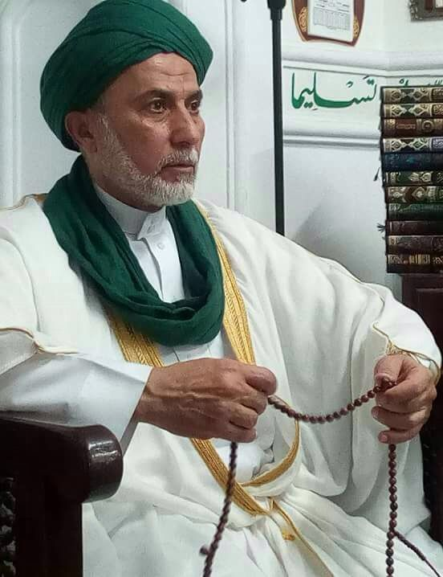
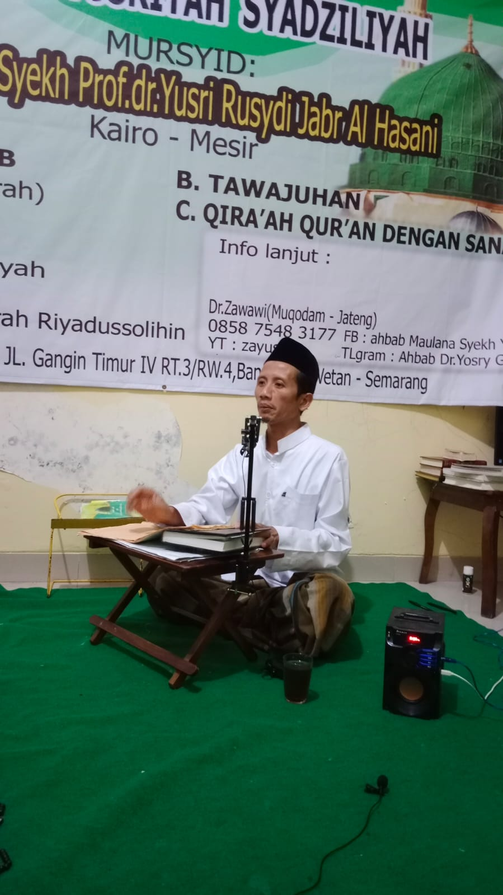

Selamat Datang di
Zawiyah Yusriyah
Beranda
Profil
Kegiatan
Kajian
Kontak
Maulana Syeikh Dr. Yusri Jabr Al-Hasani Al-Huseini

Mursyid Thoriqoh Syadziliyah Yusriyah
Dr. KH. Zawawi Abdul Wahid Al-Azhari

Muqoddam Thoriqoh Syadziliyah Yusriyah
Biografi
Kajian
Kegiatan Dakwah